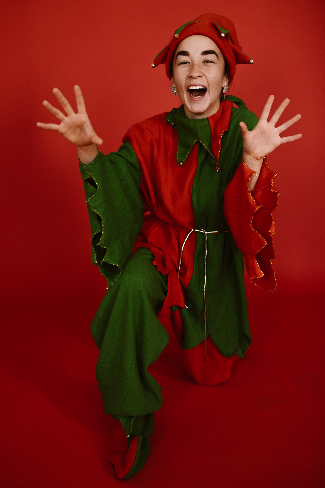

Santa Claus

Owner of Santas workshop and king of the North Pole. “Work” is a word that Santa Claus finds a little strange, and he often starts to smile when he hears that word. He is a busy man, especially around Christmas, but he doesn’t think he’s really working; so much he likes what he’s doing. Sitting by the campfire and watching the amazing Northern Lights is something Santa loves doing, just as skateboarding and fishing. Santa Claus is also a great fan of taking naps, and above all, he simply loves reading all the letters he is sent.
Shinny Upatree
Shinny is a stickler for getting things done that are necessary. He makes the elves keep working by singing christmas carols. Being the head-elf, he has the responsibility of looking after the workshop and the other elves. He also have a big passion for gifts!
Rudolph

Ever since Rudolph was a young calf, he has proven everyday that he is worthy being the leading reindeer, even though he is the youngest of reindeers. Rudolph has a very shiny nose and if you ever saw it, you would even say it glows. With his nose so bright, he guides Santas sleigh at night. The Christmas journey is definitely the highlight of his year.